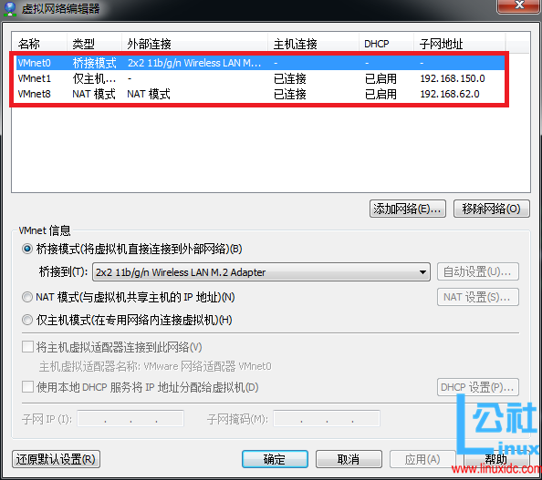
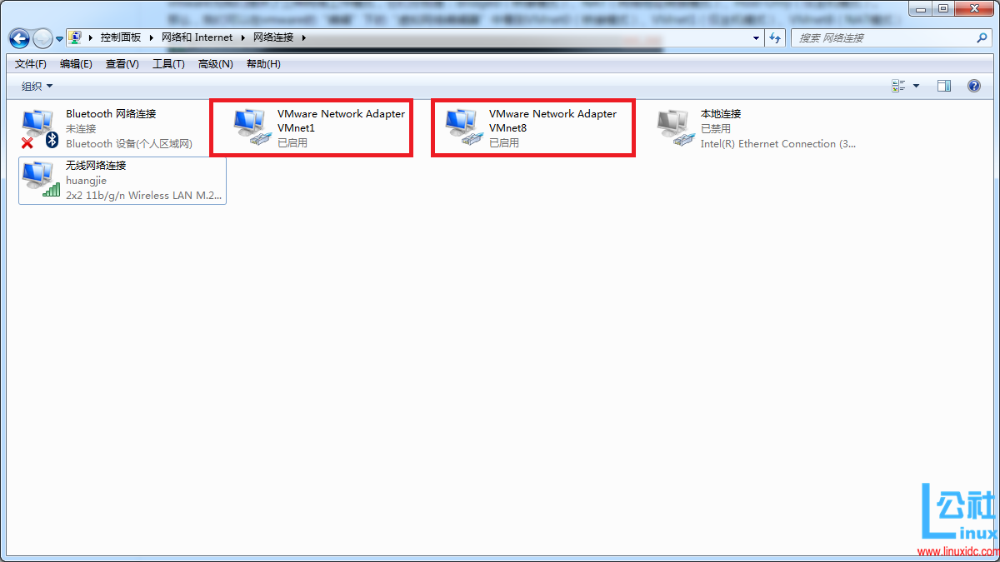
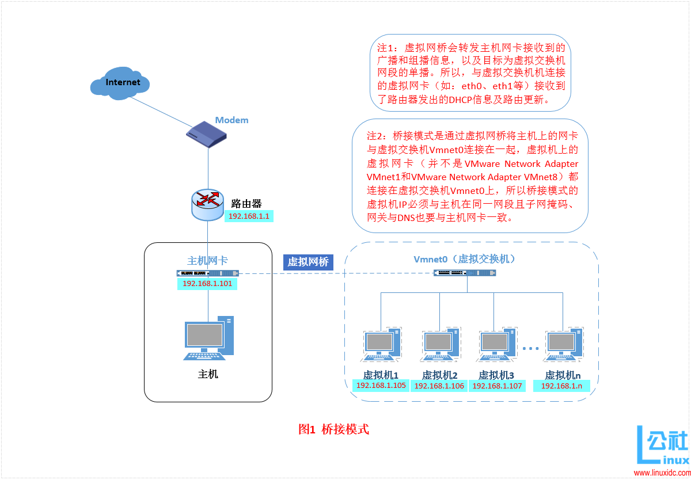
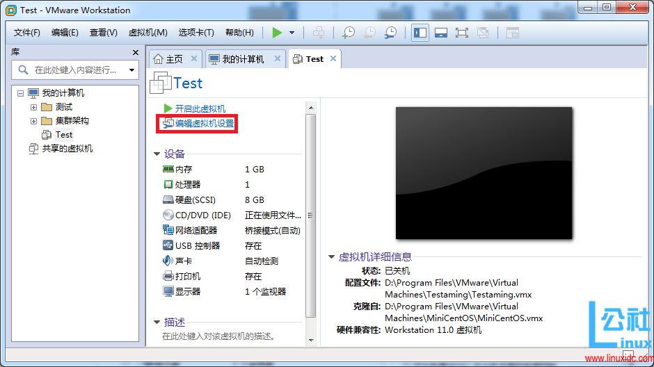
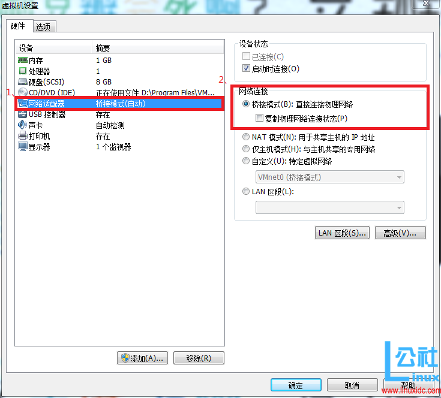
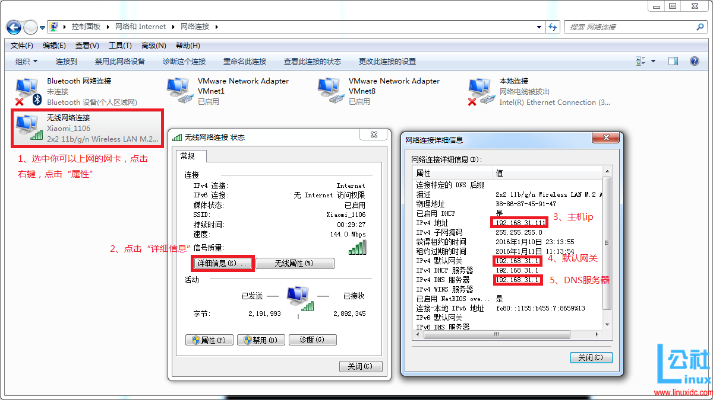
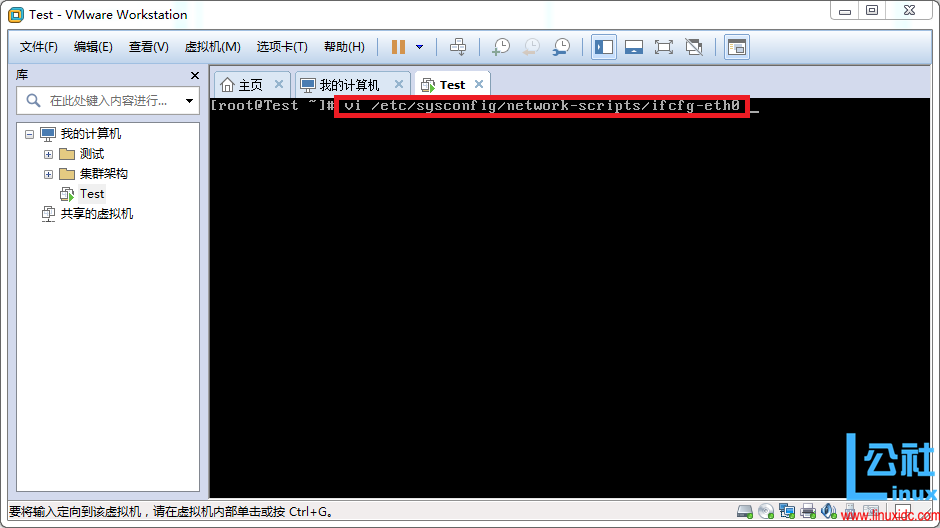
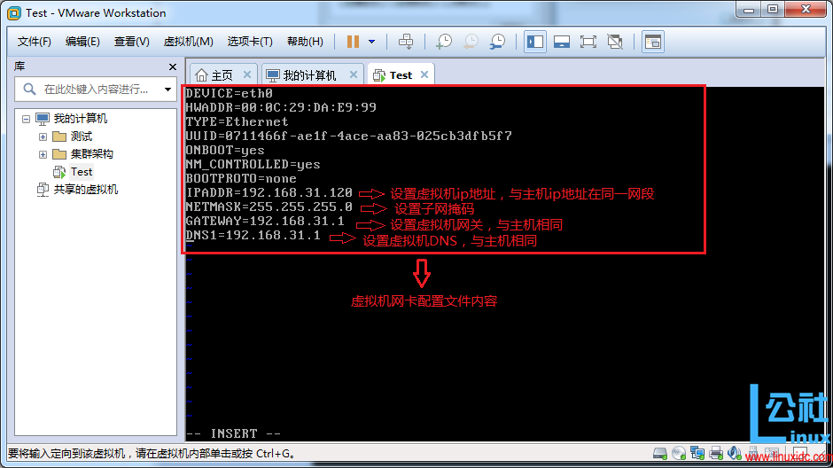
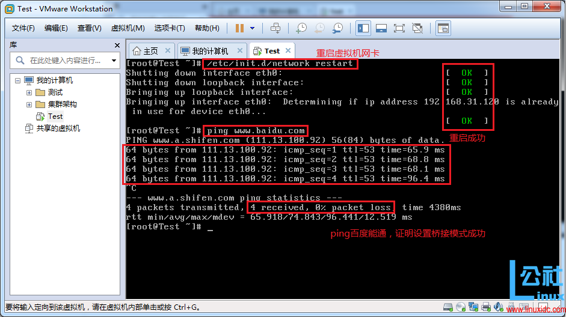
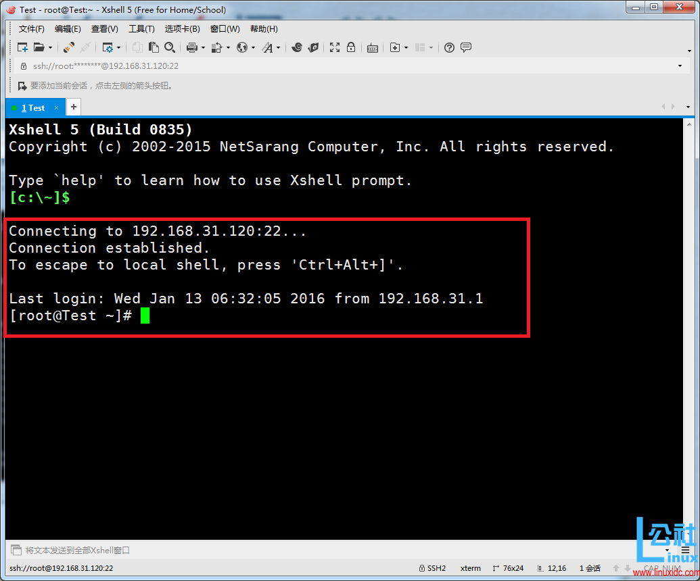

由于Linux目前很热门，越来越多的人在学习Linux，但是买一台服务放家里来学习，实在是很浪费。那么如何解决这个问题？虚拟机软件是很好的选择，常用的虚拟机软件有VMware Workstations和VirtualBox等。在使用虚拟机软件的时候，很多初学者都会遇到很多问题，而VMware的网络连接问题是大家遇到最多问题之一。在学习交流群里面，几乎每天都会有同学问到这些问题，写这篇详解也是因为群里童鞋网络出故障，然后在帮他解决的过程中，对自己的理解也做一个总结。接下来，我们就一起来探讨一下关于VMware Workstations网络连接的三种模式。
vmware为我们提供了三种网络工作模式，它们分别是：Bridged（桥接模式）、NAT（网络地址转换模式）、Host-Only（仅主机模式）。
打开vmware虚拟机，我们可以在选项栏的“编辑”下的“虚拟网络编辑器”中看到VMnet0（桥接模式）、VMnet1（仅主机模式）、VMnet8（NAT模式），那么这些都是有什么作用呢？其实，我们现在看到的VMnet0表示的是用于桥接模式下的虚拟交换机；VMnet1表示的是用于仅主机模式下的虚拟交换机；VMnet8表示的是用于NAT模式下的虚拟交换机。

同时，在主机上对应的有VMware Network Adapter VMnet1和VMware Network Adapter VMnet8两块虚拟网卡，它们分别作用于仅主机模式与NAT模式下。在“网络连接”中我们可以看到这两块虚拟网卡，如果将这两块卸载了，可以在vmware的“编辑”下的“虚拟网络编辑器”中点击“还原默认设置”，可重新将虚拟网卡还原。

小伙伴看到这里，肯定有疑问，为什么在真机上没有VMware Network Adapter VMnet0虚拟网卡呢？那么接下来，我们就一起来看一下这是为什么。
什么是桥接模式？桥接模式就是将主机网卡与虚拟机虚拟的网卡利用虚拟网桥进行通信。在桥接的作用下，类似于把物理主机虚拟为一个交换机，所有桥接设置的虚拟机连接到这个交换机的一个接口上，物理主机也同样插在这个交换机当中，所以所有桥接下的网卡与网卡都是交换模式的，相互可以访问而不干扰。在桥接模式下，虚拟机ip地址需要与主机在同一个网段，如果需要联网，则网关与DNS需要与主机网卡一致。其网络结构如下图所示：

接下来，我们就来实际操作，如何设置桥接模式。
首先，安装完系统之后，在开启系统之前，点击“编辑虚拟机设置”来设置网卡模式。

点击“网络适配器”，选择“桥接模式”，然后“确定”

在进入系统之前，我们先确认一下主机的ip地址、网关、DNS等信息。

然后，进入系统编辑网卡配置文件，命令为vi /etc/sysconfig/network-scripts/ifcfg-eth0

添加内容如下：

编辑完成，保存退出，然后重启虚拟机网卡，使用ping命令ping外网ip，测试能否联网。

能ping通外网ip，证明桥接模式设置成功。
那主机与虚拟机之间的通信是否正常呢？我们就用远程工具来测试一下。

主机与虚拟机通信正常。
这就是桥接模式的设置步骤，相信大家应该学会了如何去设置桥接模式了。桥接模式配置简单，但如果你的网络环境是ip资源很缺少或对ip管理比较严格的话，那桥接模式就不太适用了。如果真是这种情况的话，我们该如何解决呢？接下来，我们就来认识vmware的另一种网络模式：NAT模式。
更多详情见请继续阅读下一页的精彩内容： http://www.linuxidc.com/Linux/2016-09/135521p2.htm